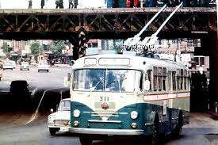
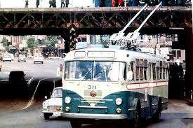
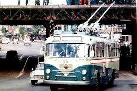

インタビュー
Q1.【ご自身が若い頃の横浜の交通（電車・バス・道路など）はどんな印象でしたか？今と比べてどう感じますか？】

Q2.【昔の横浜の“暮らしの便利さ”はどのくらいでしたか？今と比べて良くなった点・変わらない点はありますか？】
Q3.【子供の頃によくやっていた遊びはどんなものでしたか？】
Q4.【昔の横浜でワクワクしたイベントや季節の行事はどんなものでしたか？今との違いはありますか？】
Q5.【昔の横浜で流行っていたカルチャー・ファッションはどんなものでしたか？】
 
